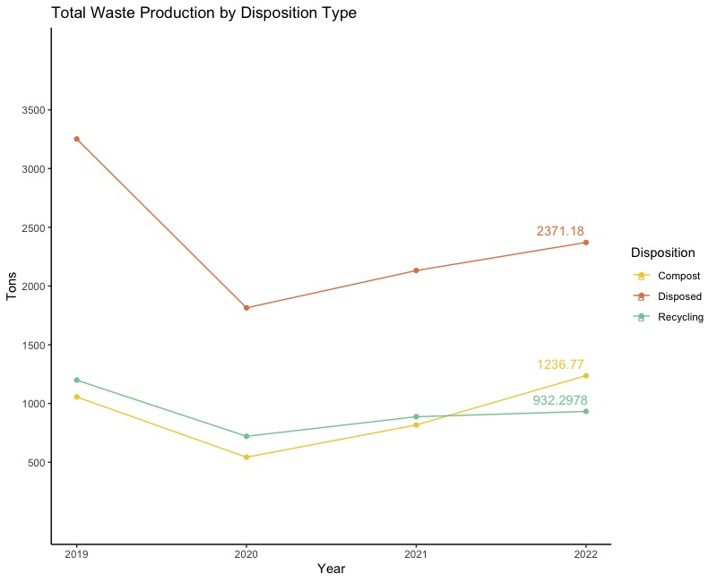
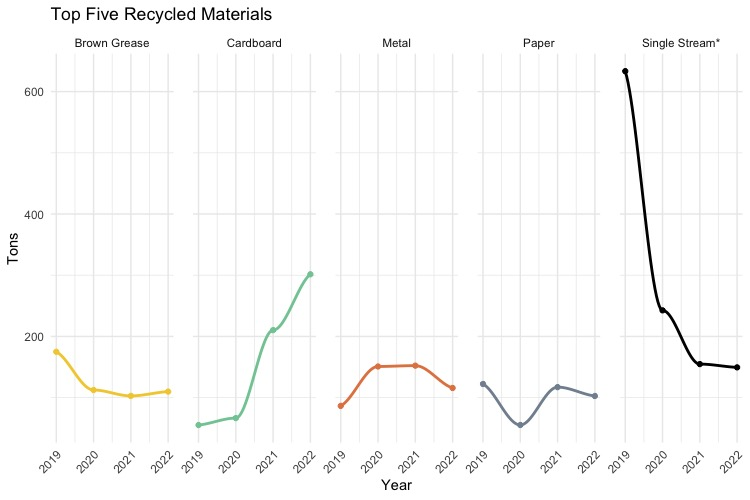

The Truth about Sustainability at Northeastern
What does sustainability look like?
With a population of over 22,000 students [1], day-to-day activities on campus result in waste production and energy use. As faculty, students and staff it's easy to ignore our own contributions to waste production on campus. However, our facilities team and the university work hard to minimize waste and create disposal procedures that promote a circular consumption environment.
Our goal with this website is to elucidate the data that are available regarding Greenhouse Gas (GHG) Emissions, Waste & Recycling, and Compost on campus to make it more accessible for all.
What do these data tell us, and how can we move toward a more sustainable culture on campus?
Our visualizations will ideally appeal to the students, faculty and the surrounding community and inspire us to fight for a cleaner future.
Greenhouse Gas Emissions
GHG (Greenhouse Gas) Emissions refer to gases released into the atmosphere, primarily from human activities, that trap heat and contribute to global climate change. The increase in these emissions threatens our planet's health, ecosystems, and our way of life. Understanding and addressing GHG emissions is crucial for a sustainable future.
Waste and Recycling
Creating waste is an everyday occurrance for average students, faculty, and staff on campus. Northeastern facilities works hard to collect and properly dispose of our waste, deliberately sorting, recycling and reusing when possible.
Learn more about waste and recycling at Northeastern below...
Learn more about composting at Northeastern in our compost section.
Compost
Prospective applicants to the Academy must prepare a demo CD of their work, be it original productions, songs or a DJ set, along with a completed questionnaire, and mail it to a Red Bull Music Academy office in Cologne, Germany. From there, each application is taken into consideration, with no quota on country or musical genre. From these applications, 60 are selected and broken down into two groups of 30.[7] Each group of 30 is flown in to the location of the respective year's event for one of two fortnightly “terms” In 2012, the Academy received over 4000 applications to take part in the 2013 New York City edition.[8]
For two weeks, the participants have the to opportunity work in up to twelve studios specially designed[9] for every edition of the Red Bull Music Academy. There, they have access to a range of the latest gear as well as analog equipment for music production and performance.[10] There are no deadlines or set quotas, and Red Bull does not own the music produced in the building.[11] These collaborative sessions are in part facilitated by the Academy’s “Studio Team,” all experienced music producers in various fields. Twice daily, participants attend lectures by guest speakers who range from composers, producers,[12] sound engineers and technological pioneers, to rappers[13] and industry professionals. Lecture attendance is the only compulsory part of the program.

The Red Bull Music Academy does not seek to select or create “stars,” [15] instead bringing together music makers with a wide range of talents, skill levels and cultural backgrounds. Notable former participants include Aloe Blacc, Branko of Buraka Som Sistema, Bahrainian oud player Hasan Hujairi, Juan Son, Natalia Lafourcade, Nina Kraviz, David Eriksson of Teenage Engineering, Blackcoffee, Flying Lotus, Salva and Andreya Triana.
The Academy also publishes a yearly double-CD compilation of music produced at the respective last edition entitled Various Assets — Not For Sale. Since 2004, those compilations have featured original music from more than 300 artists, including Dorian Concept, Flying Lotus, Lusine, Theo Parrish, Aloe Blacc, Mark Pritchard, XXXchange, Om’Mas Keith of Sa-Ra, Illuminated faces, Tony Allen, Mr Hudson, Dennis Coffey, Hudson Mohawke, DJ Zinc, Wally Badarou, Benga, Phonte, Jake One, Steve Spacek of Spacek, and Natalia Lafourcade.

The Red Bull Music Academy hosts additional workshops and three-day Base Camp sessions in more than 60 countries every year. These events resemble the actual Academy in consisting of music lectures, hands-on production workshops, studio sessions, art exhibitions, and night time activities such as concerts and club events.[16] There is a strong focus on local topics as well as an international perspective.